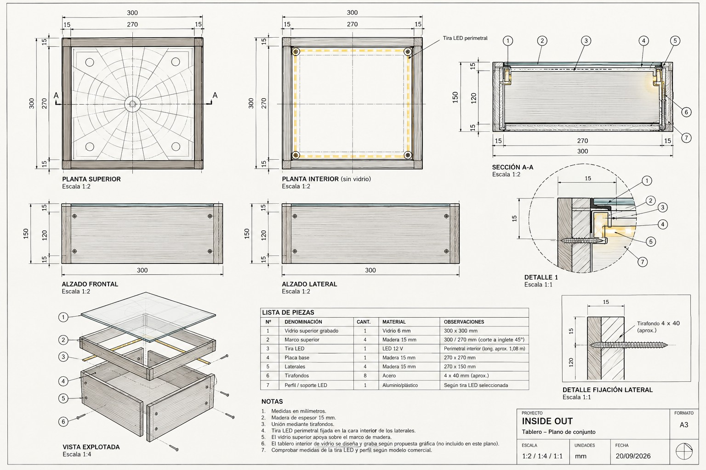
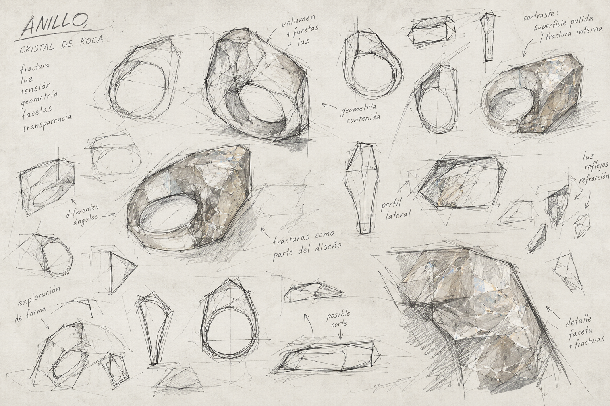
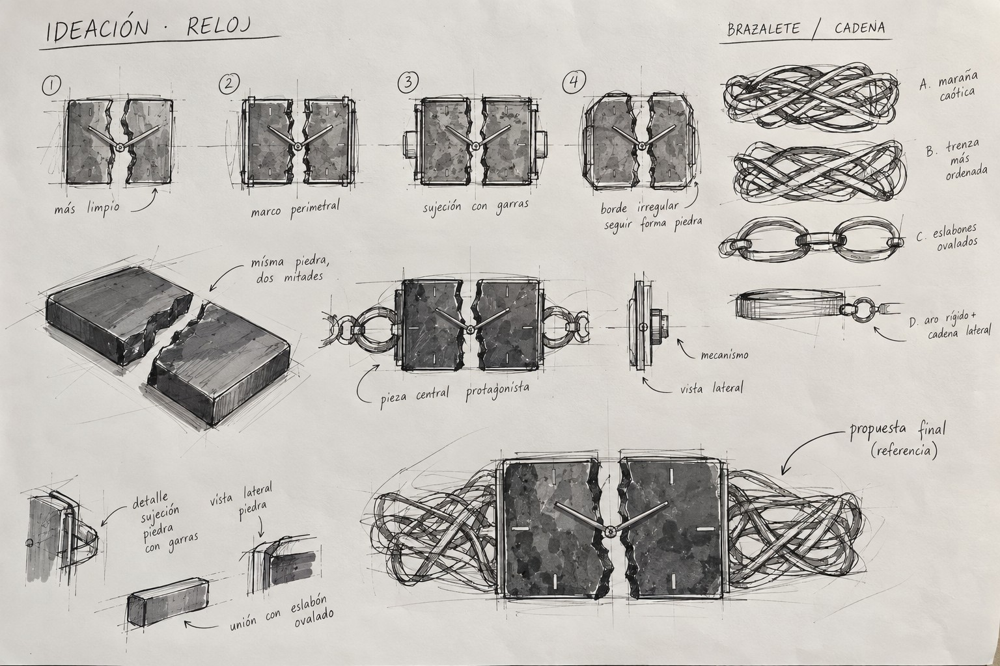

APPROACH / EVIDENCE
HOW I THINK
Research becomes criteria. Criteria become tests. Making produces new information.
CONSTRAINTS BEFORE FORM.
INSIDE OUT was conceptualised and made in approximately two days. The glass board needed to be held securely while remaining removable. A fitted fixing, released by loosening its connection, provides access to the board and the internal lighting.
INSIDE OUT ↗
THE MATERIAL CAN BECOME THE EXPERIMENT.
LATENT began with raw rock crystal. Cutting, shaping, drilling and faceting established the ring; controlled thermal contrast encouraged internal fractures. Polishing clarified the outer planes while leaving those internal changes visible.
LATENT ↗
TECHNICAL INFORMATION IS PART OF THE PROJECT.
STACK separates the questions of use and construction. Hand-position studies examine grip and pouring; the technical drawings define sections, the spout, repeated modules and the lid fit. These documents make the proposed family more than a set of renders.
STACK ↗
KNOWLEDGE MOVES BETWEEN DISCIPLINES.
Without prior watchmaking training, I dismantled approximately four or five watches and studied how their mechanisms worked. That research informed INTERVAL: a watch proposal developed around a ruby-in-zoisite stone I had cut, shaped and polished by hand.
INTERVAL ↗
THINK → CONNECT → MAKE → MEAN